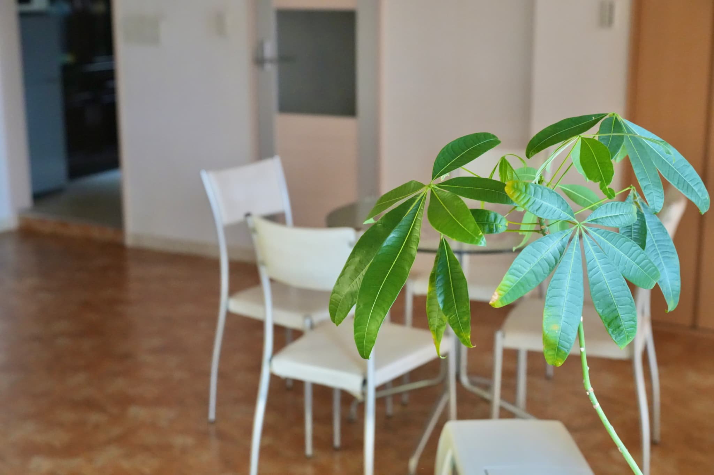
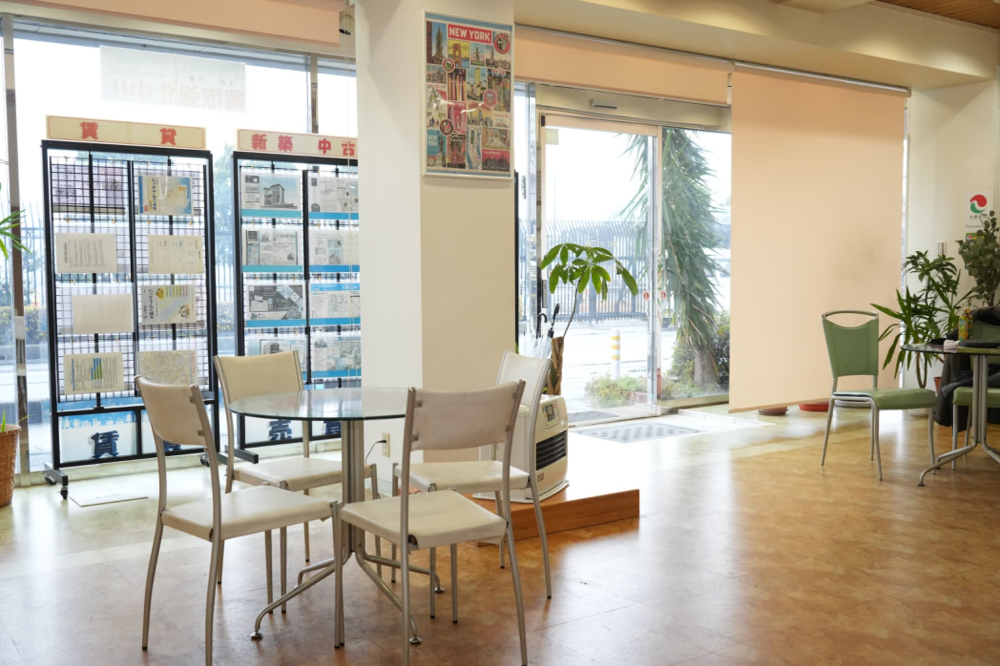

#コーポレート #ビジネス撮影 #ホームページ写真
Corporate Photography: 株式会社テクノウッド 様
2025.12.24株式会社テクノウッド様のコーポレートサイト（会社概要ページ）のリニューアルに伴い、Webサイトに使用する各種写真の撮影を担当させていただきました。
Portrait
ご挨拶ページに使用する、信頼感と誠実な人柄が伝わる社長プロフィール写真
Website Headers
ホームページのファーストビューを飾る、温かみあふれる美しい店内の広角カット


Website Screenshot
実際の会社概要ページにて写真が組み込まれたWebサイト全体のプレビュー

写真が変わるだけで、Webサイトから受ける企業の第一印象や安心感は劇的に変化します。
この度の撮影が、テクノウッド様のさらなるビジネスの発展と、素敵な出会いに繋がることを心より応援しております。